Full paper in compressed Postscript *.ps.gz
Mechanics as a science used computer-aided symbolic calculations since their appearance and indirectly helped to develop computer algebra in its modern form. It is possible to think that mutual interest of these disciplines is partially explained by the fact that Newton's dynamics for long period of its development offered a huge diversity of problems, methods and algorithms. The fields of authors interest presented in this paper are qualitative theory of ordinary differential equations, stability of motion and dynamics of solid body. Using the methods of qualitative analysis requires constructing and possible transformation of motion equations of complex mechanical systems in the Lagrange, Hamilton, Euler-Lagrange, Routh and other forms. It is labour-intensive but well algorithmizable job.
In many problems of gyroscopia, space dynamics and robotics the representation of motion equations in symbolic form allows to avoid unreasonably great numerical experiments, stimulates effective usage and development of qualitative methods. In these areas computer algebra systems usually offer the significant help both on modelling stage (construction of kinetic energy and force function of mechanical system, construction and transformation of motion equations) and during qualitative analysis of obtained equations. This help is significant even for objects of moderate dimension.
Authors of the report together with the colleagues have developed and use software package based on computer algebra system Mathematica. This package implements modelling of motion of solid bodies systems with holonomic links in Lagrange's formalism; construction of kinetic energy and force functions for certain force fields, construction of differential equations in the Lagrange, Hamilton and Routh forms; qualitative analysis of the constructed equations; construction and analysis of stationary solutions stability by second Lyapunov's method (including the first approximation methods that use the Routh-Hurwitz method and its generalizations); finding of first integrals and investigation of system spectrum, bifurcation sets of stationary manifolds, etc. with the help of these integrals. The algorithms of mechanical systems modelling and qualitative analysis of their motion equations are published in [1,2]
Let us discuss several applications of the above mentioned software package.
1. Modelling of solid body (satellite) with a point of mass m2attached to main body with visco-elastic spring, moving in Newton's central force field (Fig.1).
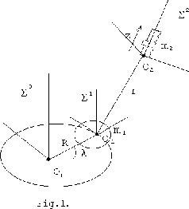
Motion of holonomical mechanical system with
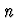
degrees of freedom in potential force field is described by Lagrange's function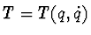
is kinetic energy of the system; U(q) is force function of potential force;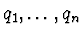
are generalized coordinates that describe a position of mechanical system in configuration space;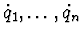
are derivatives of the coordinates by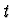
.To calculate Lagrange's function of the mechanical system in Fig.1, we must supply the description of the system geometry to program, as it shown below. We use three coordinate systems for this description: inertial , orbital
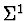
and connected to the point m2.Program input.
The description of motion of the coordinate system relative to :
mass = 0,
rO10 =
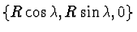
,rC11 =
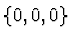
,vO10 =
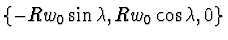
,
 ,
,
the numbers of rotation axes =
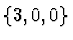
,the rotation angles =
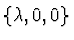
,the list of coordinates =
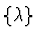
.The description of the satellite motion in the coordinate system :
mass = m1,
rO11 = ,
rC11 = ,
vO11 = ,
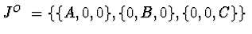
,the numbers of rotation axes =
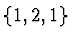
,the rotation angles =
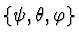
,the list of coordinates = .
The description of the coordinate system motion relative to :
mass = 0,
rO21 =
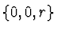
,rC22 = ,
vO21 = ,
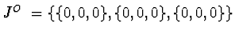
,the numbers of rotation axes = ,
the rotation angles = ,
the list of coordinates =
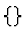
.The description of motion of the point m2 in the coordinate system :
mass = m2,
rO22 =
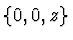
,rC22 = ,
vO22 =
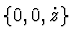
,,
the numbers of rotation axes = ,
the rotation angles = ,
the list of coordinates =
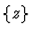
,Rayleigh's function =
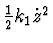
,the potential energy of the spring =
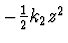
.Here rOij is the radius-vector of attachment point Oi of i-th and j-th bodies in coordinate system
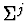
; rCii is the radius-vector of mass center of i-th body in coordinate system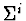
; vOij is the relative speed of point Oi in projections on axes of ; JOi is the inertia tenzor of solid body; O1 is the inertia center of the satellite;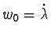
is the angle velocity of mass center O1; m1 is the mass of the satellite; A, B, C are the main central inertia moments of the satellite;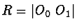
;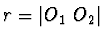
; z is the extension of the spring; k1, k2 are the viscosity and the elasticity coefficients of the spring.Program output.
Lagrange's function:
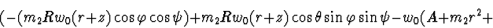
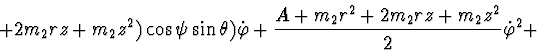
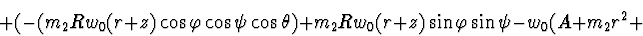
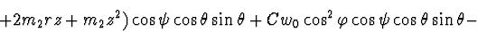
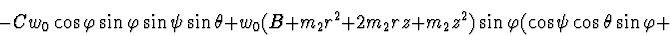
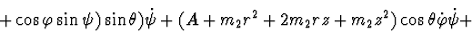
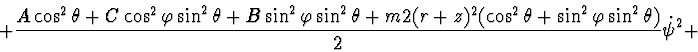
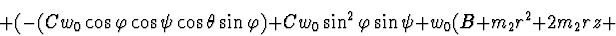
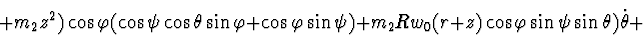
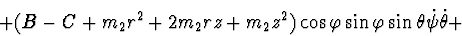
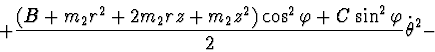
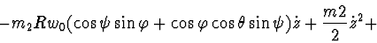
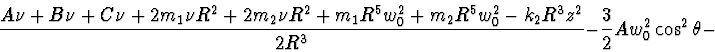
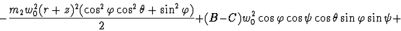
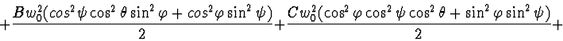
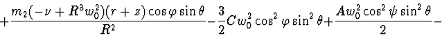
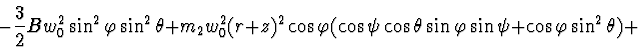
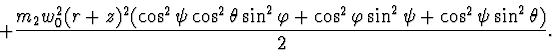
Rayleigh's function:
The list of generalized coordinates:
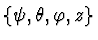
Elapsed time: 0 h. 0 min. 43:1 sec.
2. Modelling of RLC-circuits.
Authors tried to apply the methods of modelling and analysis of mechanical systems to electrical ones. The results of computer-aided modelling and analysis of linear circuits are presented in [3]. Here nonlinear circuits are discussed.
According to [5,6], the state of nonlinear RLC-circuit can be described
by the equations system:
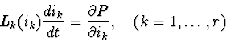
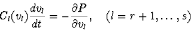
The function P(i,v) can be used not just for the construction of circuit equations, but also for qualitative analysis of them. In latter case it could be treated as an analogue for Lyapunov's function.
In [5] it is discussed the construction of the mixed potential for the class of complete circuits. The complete means that a circuit is described by the complete set of variables. The complete set of variables is chosen independently without leading to a violation of Kirchhoff's laws and determines current or voltage in any branch of circuit.
The set of currents in inductors and voltages across capacitors is complete. If a circuit is not complete then it is transformed to the complete one by adding inductors in series and capacitors in parallel. The original circuit is considered as a limiting case of the new one.
Let us describe the procedure of constructing the mixed potential for complete circuits. It consists of the following steps.
Choose in the graph a maximal tree with
the set of links  .
.
Choose in a subtree with the set of links . is all branches which connect two nodes of and form a loop with branches of only.
According to [5], the currents in and the voltages in form the complete set of variables. This is correct also for r=0,s>0; r>0,s=0; rs>0.
Calculate the mixed potential by the formula:
is the set of branches where the currents can be determined from by Kirchhoff's node law; is the set of branches where the voltages can be determined from by Kirchhoff's loop law; is a loop; is a loop current; is the voltage of branches of in .
To illustrate the procedure of constructing the mixed potential we will consider the circuit in Fig.2 and its graph in Fig.3.
Here the nonlinear elements are resistors .
The maximal tree consists of branches
,
 =
,
=
,
=
,
=
.
So the currents
i1,i2,i3,i4 in the inductors
L1,L2,L3,L4and the voltages
v5,v6,v7,v8 across the capacitors
C1,C2,C3,C4are the complete set of variables.
=
,
=
,
=
,
=
.
So the currents
i1,i2,i3,i4 in the inductors
L1,L2,L3,L4and the voltages
v5,v6,v7,v8 across the capacitors
C1,C2,C3,C4are the complete set of variables.
Now we can construct the mixed potential by the formula (1).
=
. According to (2),
F(i1,i2,i3,i4) is calculated only for the resistive branches
.
To calculate we construct the loops and consider their intersections with .
= , = , = , = . = , = , = , = .
According to (2),
=
i1 (v5 - v8) + i2(v6 - v5) + i3( -v6 - v7) +
i4 (v7 + v8) and the mixed potential
Ability to apply the analytical methods of mechanical systems to electrical ones allows to formulate a problem of modelling of mechanical systems with circuits. This problem can be applied, for example, to analysis of transient states of mechanical systems after losing stability near the boundaries of stationary motions family. The number of these problems could be increased. It is important that parameters of circuits can be measured easier than parameters of mechanical ones.
3. Finally, we present the results of investigation of one generic
mechanical system with first integrals. Let us discuss the system of absolutely
solid bodies, connected by spherical and cylindrical hinges to single carrying
body, that has a fixed point. The positions of carried bodies we will define as
generalized coordinates
q1,q2,...,qn.
Let us suppose that forces acting on the system are potential and could be
determined by the force function
U(q1,q2,...,qn).
The full mechanical energy of such system looks like
The differential equations of described system motion have the following
form:
the integral of kinetic moment projection to vertical axis:
For the entire class of problems that are described by the above differential
equations we can make qualitative analysis of phase space by selecting a set
of invariant manifolds that provide stationary values for different first
integrals from algebra of first integrals with basis formed by the integrals
H,V1,V2,V3. Also we can study stability and bifurcations of
selected invariant manifolds of stationary motions using Lyapunov and
Poincaré methods. For example, let us discuss bundle of the first integrals
According to the theorem of [3] it is possible to state that the elements of
manifolds family
Using this approach we can obtain stability conditions for the elements of
found family of invariant manifolds of stationary motions (IMSM) by
second Lyapunov's method. Non-writing the equations of disturbed motion
in the neighbourhood of our IMSM, let us consider the first integral Kas Lyapunov's function. Let us write it in the terms of deviation
from the manifold in question, i.e (in our case) in variables
.
The direct calculation gives:
1. Banshchikov A.V., Bourlakova L.A., Ivanova G.N., Simonov S.A. MECHANIK package of symbolic computations. The problems and the structure //Packages of applied programs. Results and applications. Novosibirsk. Nauka, 1986, p.96-105. (in Russian)
2. Irtegov V.D. Invariant manifolds of stationary motions and their stability. Novosibirsk. Nauka, 1985. (in Russian)
3. Irtegov V.D., Titorenko T.N. On modelling and research of some problems with the use of computer algebra //Programming (Programirovanie), 1, 1997, p.68-74. (in Russian)
4. Litvin-Sedoi M.Z. Systems mechanics of connected solid bodies //Results of science and engineering. General mechanics. Moscow.: VINITI, vol.5, 1992, p.3-52. (in Russian)
5. Brayton R.K., Moser J.K. A theory of nonlinear networks - 1 //Quaterly of Applied Mathematics, 1964, vol.22, 1, p.1-33.
6. Brayton R.K., Moser J.K. A theory of nonlinear networks - 2 //Quaterly of Applied Mathematics, 1964, vol.22, 2, p.81-104.
7. Gaylord Richard J., Kamin Samuel N., Wellin Paul R. Introduction to Programming with Mathematica. Springer-Verlag, 1996.
8. Wolfram S. Mathematica: A System for Doing Mathematics by Computer. Addison - Wesley Publ. Co., 1988.